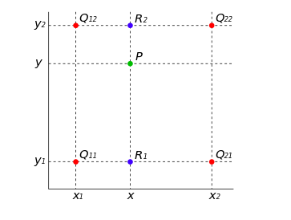

插值方法
opencv的resize(InputArray src, OutputArrar dst, Size dsize, double fx=0, double fy=0, int interpolation=INTER_LINEAR)函数能够对输入图像进行缩放
前两个参数分别为输入和输出图像。dsize表示输出图像的大小，如果为0，则
$$
disze = Size(round(fx * src.cols), round(fy * src.rows)); \;\;round表示四舍五入
$$
dsize和fx、fy不能同时为0，fx、fy分别表示列（cols）和行（rows）的缩放系数，也即沿x轴和y轴的缩放系数。
最优一个参数interpolation表示插值方式，有以下几种：
- INTER_NEAREST - 最近邻插值
- INTER_LINEAR - 线性插值（默认）
- INTER_AREA - 区域插值
- INTER_CUBIC - 三次样条插值
- INTER_LANCZOS4 - Lanczos插值
什么是插值
假设源图像的大小为（src.rows, src.cols），目标图像的大小为（dst.rows，dst.cols）
那么目标图像中位置（x'，y'）的像素，在源图像中对应的位置为\((x' \frac{src.rows}{dst.rows}, y'\frac{src.cols}{dst.cols})\)，令其为(x,y)
所以dst[x'][y']的灰度值应该与src[x][y]的灰度值相等，但是上面公式算出来的坐标(x,y)是小数，所以源图像中是不会存储该点的灰度值。
所以插值就是：通过该点周围的整数坐标点的函数值计算出该点的灰度值
最近邻插值
最近邻插值的想法是找到距离(x,y)最近的点，然后将该该点的灰度值赋值给dst[x'][y']
- 优点：计算速度快
- 缺点：具有马赛克效应
一般来说，插值越复杂，效果越好，计算速度也就越慢。
双线性插值
插值是数学领域数值分析中的通过已知的离散数据求未知数据的过程或方法。 根据若干离散的数据数据，得到一个连续的函数（也就是曲线）或者更加密集的离散方程与已知数据相吻合。这个过程叫做拟合。插值是曲线必须通过已知点的拟合。
线性插值
先讲一下线性插值：已知数据 \((x_0, y_0)\) 与 \((x_1, y_1)\)，要计算 \([x_0, x_1]\) 区间内某一位置\(x\)在直线上的\(y\)值
那么可以过这两点做一条直线，然后把\(x\)带进去就可以求出\(y\)了
$$ \frac{y - y_0}{x - x_0} = \frac{y_1 - y_0}{x_1 - x_0} $$
移项、通分、整理之后得到
$$ y = \frac{x_1 - x}{x_1 - x_0} y_0 + \frac{x - x_0}{x_1 - x_0} y_1 $$
可以看出：点\(x\)的函数值\(y\)，其实就是\(y_0\)和\(y_1\)的加权平均。如果\(x\)越靠近\(x_0\)，那么\(\frac{x_1 - x}{x_1 - x_0}\)越大，也即\(y_0\)的权值越大；反之，\(y_1\)的权值越大。
{kind=link}
双线性插值
在数学上，双线性插值是有两个变量的插值函数的线性插值扩展，其核心思想是在两个方向分别进行一次线性插值，如下图 
{kind=link}
假如我们要知道点\(P\)的函数值，在已知函数\(f\)在周围4个点的函数值分别为\(Q_{11} = (x_1,y_1)\)，\(Q_{12} = (x_1,y_2)\)，\(Q_{21} = (x_2,y_1)\)，\(Q_{22} = (x_2,y_2)\)
-
首先沿着水平方向进行两次插值，得到\(R_1\)和\(R_2\)两点的函数值
- \(f(R_1) \approx \frac{x_2 - x}{x_2 - x_1}Q_{11} + \frac{x - x_1}{x_2 - x_1} Q_{21}\)
- \(f(R_2) \approx \frac{x_2 - x}{x_2 - x_1}Q_{12} + \frac{x - x_1}{x_2 - x_1} Q_{22}\)
-
然后沿着竖直方向进行一次插值，得到点\(P\)的函数值
- \(f(P) = \frac{y_2 - y}{y_2 - y_1} f(R_1) + \frac{y - y_1}{y_2 - y_1} f(R_2)\)
综合起来就是
\(f(P) = \frac{f(Q_{11})}{(x_2 - x_1)(y_2 - y_1)}(x_2 - x)(y_2 -y) + \frac{f(Q_{21})}{(x_2 - x_1)(y_2 - y_1)}(x-x_1)(y_2 - y) \) \(+ \frac{f(Q_{12})}{(x_2 - x_1)(y_2 - y_1)}(x_2 - x)(y - y_1) + \frac{f(Q_{22})}{(x_2 - x_1)(y_2 - y_1)}(x - x_1)(y - y_1)\)
由于图像的双线性插值只会用到相邻的四个点，所以上述公式的分母都是1，所以下面的公式就是图像的双线性插值公式
$$ f(P) = f(Q_{11})(x_2 - x)(y_2 -y) + f(Q_{21})(x-x_1)(y_2 - y)+ f(Q_{12})(x_2 - x)(y - y_1) + f(Q_{22})(x - x_1)(y - y_1) $$
特别的，我们令u,v表示坐标(x,y)的小数部分
那么公式变为f(x+u,y+v) = (1-u)(1-v)f(x,y) + (1-u)vf(x,y+1) + u(1-v)f(x+1,y) + uvf(x+1,y+1)
几何中心对齐
说是源图像要和目标图像的几何中心对齐什么的， 不是很明白
浮点运算转为整数运算
- 放大越大越好，放大倍数越多，说明保留的小数位数也就越多，，但是int类型的表示是有限的
- 最好是2的倍数，可以用左右位移操作来实现
- 所以2048是最好的选择，因为u和v都放大了2048倍，乘法的上界是2048 * 2048 * 255 = 1069547520，结果是10亿多，所以在int类型中最大只能放大2048倍
- 选用int是因为int运算速度快，比long long快
- 乘以2048变11位小数为整数，因为左移了11位，想要理解更深刻，应该去了解小数是如何存储的
- 最后的结果要右移22位，因为u和v都放大了2048倍，相乘后结果就放大了2048 * 2048倍
事实上，这和过4个点插值出方程\(f(x,y)=ax+by+cxy+d\)，然后把\(x\)带进去算出\(y\)来是一样的。